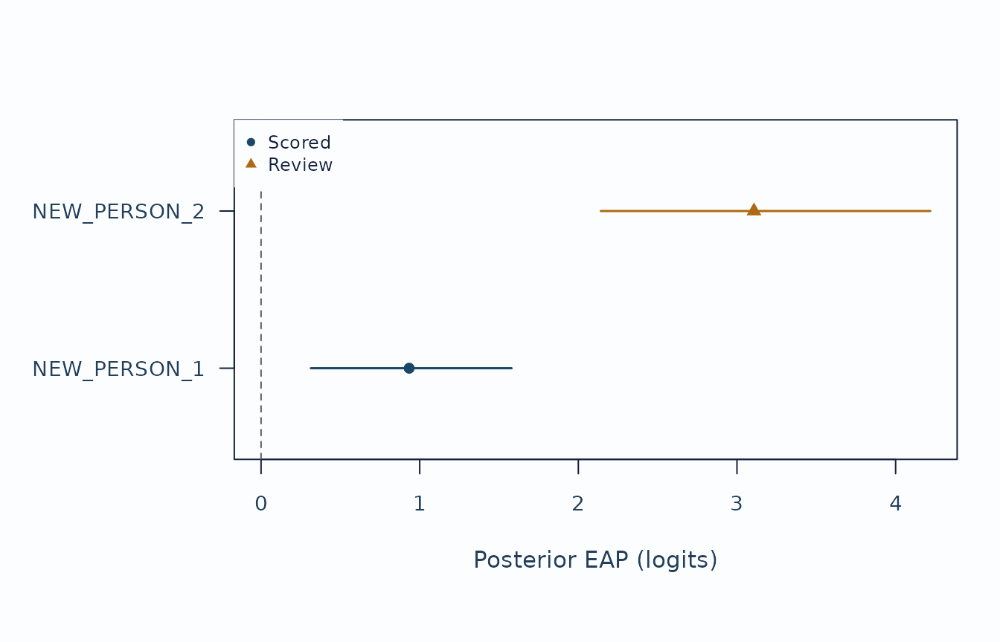

Portable calibration and fresh-session scoring
Source:vignettes/mfrmr-portable-calibration.Rmd
mfrmr-portable-calibration.RmdThis workflow creates a portable calibration from an eligible fitted model, validates and freezes it, saves it, and then scores new Persons without the source fit or training responses. The scoring phase uses only the saved artifact and the new response rows.
For example, after calibrating a rubric and its raters, you may receive ratings for a new class. The frozen calibration lets you score that class on the stored scale. It does not estimate the severity of new raters or establish that the original scoring prior suits the new class.
Choose the object to save according to what you want to do later:
| Later task | Object and saving route | What it preserves |
|---|---|---|
| Revisit the fitted analysis and reports | Fitted model or mfrm_results() via
saveRDS()
|
The retained analysis, diagnostics and attached results; it may contain response-level data. |
| Score new response rows without the training fit | Frozen mfrm_calibration via
save_mfrm_calibration()
|
Calibrated coordinates, scoring basis and checks; no training responses or Person estimates. |
| Reproduce an already scored batch’s tables and figures |
mfrm_calibration_score via saveRDS()
|
Scores, intervals, dispositions and actual scoring settings; no rescoring is needed. |
CSV exports are useful tables, but do not replace these complete objects. Validation checks the saved parameters, scoring settings and model checks; freezing makes that calibration available for scoring. These steps do not establish model fit, absence of bias or validity for a new population. A new Person can use known calibrated facet levels; an unknown rater, task or category requires an appropriate calibration workflow, not relabeling it as an existing level.
The portable workflow is deliberately narrower than fitted-object
scoring. It supports one observed score scale and one latent dimension.
RSM and PCM MML use the fixed standard-normal
calibration basis (file format 1). In the development version,
GPCM MML also supports an estimated intercept-only normal
population (file format 2), one positive slope family and shared or
separate slope/step owners. GPCM requires unit weights and no anchors or
interactions. RSM/PCM JML also supports post-hoc EAP from a portable
artifact (file format 3), with a finite identified source, unit weights
and no anchors or interactions. Shared-owner GPCM JML uses file format 4
after passing its conditional joint-likelihood and curvature checks.
Experimental corrected shared-owner GPCM JML uses file format 5 with
fresh adjusted-equation checks, an explicit correction order and a
separate post-hoc normal reference prior. Its finite EAPs are not
corrected Person maxima; calibration uncertainty and residual bias are
not included in posterior intervals. See the corrected-JML example in
vignette("mfrmr-gpcm-scope", package = "mfrmr").
Estimated-population RSM/PCM and latent regression remain
fitted-object-only routes.
Experimental two-family GPCM MML uses file format 6 with the same public lifecycle below. It retains two ordered slope owners, second-owner steps, the original category coding and fixed N(0,1) prior. The first owner’s locations and log slopes are centered; the second owner’s locations and slopes remain free. Source identity/convergence and finer-integration checks must pass before extraction; review-only sources cannot be frozen. Each scoring batch must pass its own EAP/SD integration checks. Both fixed-grid EM and adaptive direct MML retain their scoring integration method.
The artifact contains no training responses or Person estimates.
Known facet levels may form new combinations, flagged by
row_dispositions$ObservedContext; this is a model-based
extension, not empirical validation of those combinations. Unit weights
are required, with no prior override or repeated-event extension. Facet
names must not collide with the reserved scoring/disposition columns
listed in ?mfrm_calibration_workflow. Validation and
freezing do not qualify sampling coverage, global identification or
population transport, and intervals exclude calibration uncertainty.
Older readers refuse format 6; formats 1–5 retain their interpretation.
See the two-family example in the GPCM scope vignette.
For a JML source, EAP holds the calibration fixed and adds a
standard-normal reference prior by default, or uses an explicit
scoring_prior. JML did not estimate that distribution. This
is not ML/WLE scoring or a replay of the original joint Person
estimates. A full fit saved with saveRDS() and a portable
calibration are different objects; only the latter omits training
responses and Person estimates. See the GPCM scope vignette for the
MML/JML feature comparison.
For RSM/PCM MML, supported direct and group facet anchors and two-way facet interactions are retained in the calibration. New responses must use its recorded non-Person facet levels. Preserving an interaction for scoring does not establish its statistical significance or the model’s suitability for another population.
For an anchored calibration, inspect
frozen$constraints$identification and
frozen$constraints$anchors after the freezing step below.
New exports record whether a facet uses whole-facet centering, legacy
remainder centering, or no centering. For example, if four raters sum to
zero and the first three have mean 0.10, the fourth must be -0.30. The
other members can still differ in severity; freezing then holds all
their calibrated values fixed for scoring.
The returned Person SD and posterior intervals condition
on those fixed values and the scoring prior. They do not include
uncertainty in the original calibration or the supplied anchors, and are
not rater SEs. Use mfrm_facet_intervals() for supported
facet uncertainty. To score supplied rows directly from an anchored fit,
use predict_mfrm_units(); score_mfrm_persons()
has a narrower, unanchored ordinary-model scope.
An old calibration is not migrated merely by loading it. Its original values and labels remain intact. Older generic identification labels do not fully describe centering; retain the source fit, or re-extract that fit for explicit labels. Re-extraction documents its original convention; changing the convention requires a corresponding recalibration.
If you have only the old calibration file, its generic constraint label is not enough to infer the missing convention. Keep the file unchanged and use its documented scoring interpretation. Re-extraction requires the source fit and the current checks, including the applicable quadrature review. If that review is missing, the source fit alone is insufficient for RSM/PCM MML extraction: completing the review requires the original data and additional fits at the chosen integration orders. Re-extraction creates a new artifact; do not overwrite the original or edit its integrity fields. For a change of convention, refit from the original ratings and extract from that new fit. The linking vignette’s migration example separates reopening, reproducing and changing an analysis. Regenerating a summary from an existing fit can display the convention; loading an already saved summary alone does not add fields to it.
library(mfrmr)
mfrm_calibration_capabilities()[, c(
"Model", "Estimator", "ScoringBasis", "PortableCalibration"
)]
#> Model Estimator ScoringBasis
#> 1 RSM MML fixed standard normal
#> 2 PCM MML fixed standard normal
#> 3 RSM/PCM MML estimated population or latent regression
#> 4 GPCM MML frozen estimated intercept-only normal
#> 5 RSM/PCM JML post-hoc standard normal reference
#> 6 GPCM JML post-hoc standard normal reference
#> 7 GPCM Corrected JML post-hoc standard normal reference
#> 8 GPCM (two families) MML fixed standard normal
#> PortableCalibration
#> 1 available
#> 2 available
#> 3 unavailable
#> 4 available
#> 5 available
#> 6 available
#> 7 available
#> 8 availableCalibration session
The bundled example_core data are synthetic. This
example uses 18 Persons to keep vignette runtime modest; a substantive
analysis should use its planned sample and design rather than copying
that count.
synthetic <- load_mfrmr_data("example_core")
person_ids <- unique(as.character(synthetic$Person))
training_ids <- person_ids[seq_len(18L)]
training <- synthetic[
as.character(synthetic$Person) %in% training_ids,
,
drop = FALSE
]
fit <- fit_mfrm(
training,
person = "Person",
facets = c("Rater", "Criterion"),
score = "Score",
model = "RSM",
method = "MML",
quad_points = 31
)
quadrature_review <- mml_quadrature_sensitivity(
fit,
training,
quad_points = c(31, 61),
theta_points = 41
)
summary(quadrature_review)
#> RSM-MML quadrature sensitivity summary
#> ReferenceNodes ComparedGrids AllEstimationConverged AllHessiansFullRank
#> 31 2 TRUE TRUE
#> MaxNLLAbsChangePerPerson MaxMeasurementParameterAbsChange MaxSlopeAbsChange
#> 0.00019 0.00174 NA
#> MaxPopulationSDAbsChange MaxProbabilityAbsChange MaxEAPAbsChange
#> 0 0.00059 0.0071
#> MaxPosteriorSDAbsChange
#> 0.01019
#>
#> Grid comparisons
#> Model ReferenceNodes Nodes IsReference NLLChangePerPerson
#> RSM 31 31 TRUE 0.00000
#> RSM 31 61 FALSE -0.00019
#> NLLAbsChangePerPerson MeasurementParameterMaxAbsChange SlopeMaxAbsChange
#> 0.00000 0.00000 NA
#> 0.00019 0.00174 NA
#> RawSlopeSEMaxAbsChange SlopeIntervalMaxAbsChange
#> NA NA
#> NA NA
#> SlopeIntervalEligibilityChanged PopulationSDAbsChange
#> NA 0
#> NA 0
#> RawPopulationSDSEAbsChange ProbabilityMaxAbsChange EAPMaxAbsChange
#> NA 0.00000 0.0000
#> NA 0.00059 0.0071
#> PosteriorSDMaxAbsChange
#> 0.00000
#> 0.01019
#> No automatic stability classification or readiness change is applied.
fit <- quadrature_review$fits$q61
draft <- extract_mfrm_calibration(
fit,
calibration_id = "portable-rsm-example",
source_fit_id = "synthetic-rsm-fit",
scoring_quad_points = 121,
quadrature_review = quadrature_review
)
review_mfrm_calibration(draft)
#> [1] Code FieldPath Detail Severity
#> <0 rows> (or 0-length row.names)
validated <- validate_mfrm_calibration(draft)
frozen <- freeze_mfrm_calibration(validated)
frozen
#> <mfrm_calibration>
#> State: frozen
#> Model: RSM / MML
#> Scoring prior: standard normal (mean 0, SD 1)
#> Facets: 2; coordinates: 11; anchors: 0
#> Validation refusals: 0
artifact_file <- tempfile(fileext = ".rds")
save_mfrm_calibration(frozen, artifact_file)The fit-time quadrature and the scoring-time quadrature are distinct. The two fit grids above illustrate a numerical sensitivity review; they are not universal sufficient orders. Inspect continuous movement on grids chosen for the application and extend them when needed. Public extraction accepts the exact highest-grid fit in that review but does not decide whether its movement is small enough. The artifact separately records the 121-point grid used for later posterior scoring, and the response-linked review should be archived outside the portable artifact when it is needed for an audit trail.
Fresh scoring session
In operational use, start a new R process and supply only the artifact path and new response rows. The following chunk removes the fit, draft, validation object, and training data before loading the artifact, so none can influence the score.
new_rows <- synthetic[
as.character(synthetic$Person) %in% person_ids[19:20],
c("Person", "Rater", "Criterion", "Score"),
drop = FALSE
]
new_ids <- stats::setNames(
c("NEW_PERSON_1", "NEW_PERSON_2"), person_ids[19:20]
)
new_rows$Person <- unname(new_ids[as.character(new_rows$Person)])
rownames(new_rows) <- NULL
# Create one explicit review case for the tutorial figure. In operational
# scoring, never alter observed responses to manufacture a disposition.
new_rows$Score[new_rows$Person == "NEW_PERSON_2"] <- max(training$Score)
rm(fit, quadrature_review, draft, validated, frozen, training, synthetic)
invisible(gc())
calibration <- load_mfrm_calibration(artifact_file)
scores <- score_mfrm_calibration(
calibration, new_rows, adaptive_quad_points = c(31, 61),
cut_scores = c(Basic = -0.5, Advanced = 0.8)
)
summary(scores)
#> mfrmr Portable Calibration Score Summary
#>
#> Fixed-parameter integration review (adaptive minus fixed)
#> FixedNodes AdaptiveNodes Persons Unavailable MaxAbsLogMarginalChange
#> 121 31 2 0 6.549072e-11
#> 121 61 2 0 6.549428e-11
#> MaxAbsEAPChange MaxAbsSDChange
#> 5.946026e-10 3.467934e-10
#> 5.946025e-10 3.467933e-10
#> Calibration: portable-rsm-example
#> Model / estimator: RSM / MML
#> Persons: 2 scored (1 requiring review); 0 not scored
#>
#> Posterior estimates (2 of 2)
#> NEW_PERSON_1: estimate 0.934, SD 0.323, interval [0.314, 1.579], scored
#> NEW_PERSON_2: estimate 3.107, SD 0.53, interval [2.141, 4.219], review
#> required
#>
#> Persons requiring review or not scored (1 of 1)
#> NEW_PERSON_2: review required; reasons: all responses at the maximum score
#>
#> Response-row disposition
#> 32 input; 32 scored; 0 omitted; 0 refused; missing-response policy: error
#>
#> Conditional decision probabilities (first 10; full table in $decisions)
#> Person Type Label Lower Upper Probability PriorMean
#> NEW_PERSON_1 above_cut Basic -0.5 Inf 9.999982e-01 0
#> NEW_PERSON_1 above_cut Advanced 0.8 Inf 6.568698e-01 0
#> NEW_PERSON_1 ability_band Band1 -Inf -0.5 1.769806e-06 0
#> NEW_PERSON_1 ability_band Band2 -0.5 0.8 3.431284e-01 0
#> NEW_PERSON_1 ability_band Band3 0.8 Inf 6.568698e-01 0
#> NEW_PERSON_2 above_cut Basic -0.5 Inf 1.000000e+00 0
#> NEW_PERSON_2 above_cut Advanced 0.8 Inf 1.000000e+00 0
#> NEW_PERSON_2 ability_band Band1 -Inf -0.5 5.375371e-21 0
#> NEW_PERSON_2 ability_band Band2 -0.5 0.8 3.306671e-08 0
#> NEW_PERSON_2 ability_band Band3 0.8 Inf 1.000000e+00 0
#> PriorSD Status Reason
#> 1 available_conditional
#> 1 available_conditional
#> 1 available_conditional
#> 1 available_conditional
#> 1 available_conditional
#> 1 review_only ALL_RESPONSES_UPPER_ENDPOINT
#> 1 review_only ALL_RESPONSES_UPPER_ENDPOINT
#> 1 review_only ALL_RESPONSES_UPPER_ENDPOINT
#> 1 review_only ALL_RESPONSES_UPPER_ENDPOINT
#> 1 review_only ALL_RESPONSES_UPPER_ENDPOINT
#> Uncertainty
#> conditional_on_point_calibration_and_prior
#> conditional_on_point_calibration_and_prior
#> conditional_on_point_calibration_and_prior
#> conditional_on_point_calibration_and_prior
#> conditional_on_point_calibration_and_prior
#> conditional_on_point_calibration_and_prior
#> conditional_on_point_calibration_and_prior
#> conditional_on_point_calibration_and_prior
#> conditional_on_point_calibration_and_prior
#> conditional_on_point_calibration_and_prior
#> Decision probabilities describe Lower < ability <= Upper on the calibration
#> scale. Calibration, population estimates and supplied cut scores are held
#> fixed. Probability accuracy depends on the scoring prior matching the
#> target population; numerical checks do not validate that match. Uncertainty
#> in an estimated prior is excluded, and a larger calibration sample does not
#> correct a mismatched scoring prior. They are not Person-difference tests or
#> probabilities of passing a future administration. Cut labels do not
#> establish CEFR alignment. Very small tails have absolute, not relative,
#> numerical accuracy.
#>
#> Interval interpretation
#> 95% intervals: continuous posterior quantiles.
#> Posterior SDs and intervals are conditional on the frozen point calibration
#> and exclude calibration-parameter uncertainty.
plot(
scores,
type = "interval",
preset = "publication"
)
unlink(artifact_file)The base and optional ggplot2 renderers distinguish scored and review
states by shape as well as colour. The complete score and review tables
remain in the summary object even though its console printout shows only
a compact preview. as_ggplot(plot(scores, draw = FALSE))
and an explicit component = "data" preserve the same
selected display and saved endpoints. Use plot_data() for
other components; drawing does not change the requested interval level.
For overlapping review labels in precision or edge-mass plots, use
label_review = FALSE and inspect
summary(scores)$review for Person IDs. The colour and shape
still identify review points.
The interval figure is the first score-batch review. Orange triangles
identify Persons whose Disposition is
scored_review; inspect their ReasonCodes
before using the estimate. A Person with no valid response has no score
coordinate and therefore appears in summary(scores)$review
and in the draw-free plot payload’s unplotted_dispositions,
not as an artificial point.
Two focused follow-up views use the same score object without consulting the source fit:
# Valid response rows versus posterior SD.
plot(scores, type = "precision", preset = "publication")
# Posterior mass on the outer quadrature nodes versus the recorded threshold.
edge_review <- plot(scores, type = "edge_mass", draw = FALSE)
edge_review$data$selection_summary
edge_review$data$unplotted_dispositionsThese displays review a returned score batch. They do not establish source-fit quality, reliability, calibration transport, or validity. Every interval and posterior SD remains conditional on the frozen point calibration and excludes calibration-parameter uncertainty.
Conditional ability-level probabilities
The cuts above are illustrative, not CEFR boundaries or recommended
passing scores. Supply boundaries justified externally on the same
calibration scale. above_cut gives the posterior
probability above a cut; ability_band gives the probability
in Lower < ability <= Upper. Only the band
probabilities sum to one. Basic and Advanced
name cuts, while Band1, Band2 and
Band3 name the successive regions. These are continuous
posterior integrals, not counts of plausible-value draws or a normal
approximation around the EAP.
decision_table <- apa_table(scores, which = "decisions")
decision_table$table[, c("Person", "Type", "Label", "Lower", "Upper",
"Probability", "Status", "Reason")]
#> Person Type Label Lower Upper Probability
#> 1 NEW_PERSON_1 above_cut Basic -0.5 Inf 9.999982e-01
#> 2 NEW_PERSON_1 above_cut Advanced 0.8 Inf 6.568698e-01
#> 3 NEW_PERSON_1 ability_band Band1 -Inf -0.5 1.769806e-06
#> 4 NEW_PERSON_1 ability_band Band2 -0.5 0.8 3.431284e-01
#> 5 NEW_PERSON_1 ability_band Band3 0.8 Inf 6.568698e-01
#> 6 NEW_PERSON_2 above_cut Basic -0.5 Inf 1.000000e+00
#> 7 NEW_PERSON_2 above_cut Advanced 0.8 Inf 1.000000e+00
#> 8 NEW_PERSON_2 ability_band Band1 -Inf -0.5 5.375371e-21
#> 9 NEW_PERSON_2 ability_band Band2 -0.5 0.8 3.306671e-08
#> 10 NEW_PERSON_2 ability_band Band3 0.8 Inf 1.000000e+00
#> Status Reason
#> 1 available_conditional
#> 2 available_conditional
#> 3 available_conditional
#> 4 available_conditional
#> 5 available_conditional
#> 6 review_only ALL_RESPONSES_UPPER_ENDPOINT
#> 7 review_only ALL_RESPONSES_UPPER_ENDPOINT
#> 8 review_only ALL_RESPONSES_UPPER_ENDPOINT
#> 9 review_only ALL_RESPONSES_UPPER_ENDPOINT
#> 10 review_only ALL_RESPONSES_UPPER_ENDPOINT
saved_scores <- tempfile(fileext = ".rds")
saveRDS(scores, saved_scores)
restored_scores <- readRDS(saved_scores)
# The appendix retains estimates, review dispositions, cuts and exact probabilities.
appendix_dir <- tempfile()
appendix <- export_summary_appendix(restored_scores, output_dir = appendix_dir,
include_html = FALSE)
unlink(appendix_dir, recursive = TRUE)
unlink(saved_scores)Review Status and Reason before
interpretation. An extreme response pattern can remain
review_only; a portable Person with no scored responses is
unavailable, with NA probabilities.
available_conditional records passing applicable numerical
checks, not the validity of a classification rule.
The complete object retains each prior in
PriorMean/PriorSD and the fixed uncertainty
basis. Summary, APA table and CSV export preserve these values without
rescoring. Existing interval figures continue to show EAPs and
intervals, not the cut probabilities.
These probabilities hold calibration, population/prior parameters and cuts fixed. They exclude calibration-estimation error, are not tests of Person differences, and do not predict passing a later administration. Tiny tails have absolute rather than relative numerical accuracy, so a returned zero or one does not establish impossibility or certainty.
When reopening an older artifact, inspect
review_mfrm_calibration() if it reports missing or
inconsistent records. Keep the original file and follow the specific
message: missing checks of the original model require re-extraction from
a saved fit that passes current checks; incomplete score records require
rescoring from a valid frozen calibration. Do not change saved check
results to force acceptance. Model refitting is not automatically
required. This is separate from a valid legacy grid-interval file, whose
original algorithm and interval limitations remain explicit.
Before reusing a calibration, identify the population to which the new Persons belong and why the retained scoring prior is appropriate on this ability scale. For example, a calibration from a broad intake may be used to score an advanced class or a group with a much narrower ability range. Accurate item and rater parameters do not make the original prior appropriate for those groups. Increasing the calibration sample does not remove that mismatch. When the prior was estimated from a small cohort, its sampling uncertainty is also absent from the reported probabilities.
PriorMean and PriorSD show the distribution
actually used, not evidence that it represents the new group. A fixed
reference prior is not generally better than an estimated prior. Where a
route permits scoring_prior, compare only alternatives
justified for the target population and retain that justification with
the saved result. Such a comparison describes sensitivity; choosing the
prior that gives the desired classification does not validate the
decision. Population-averaged accuracy does not guarantee accurate
probabilities in every subgroup, close to a cut, or for each individual
Person.
The same option is available for ordinary RSM/PCM
predict_mfrm_units() and eligible ordinary RSM MML
score_mfrm_persons(). Each route keeps its existing source,
prior and missing-data rules; source-roster missing-only Persons may be
prior_only. JML supplies a separate reference prior rather
than estimating a population distribution. Unit weights and
continuous-posterior artifacts are required. The GPCM examples later in
this article do not support cuts.
A small edge mass does not guarantee accurate integration: a narrow
posterior can fall between nodes near the middle of the grid. The
optional adaptive_quad_points above adds a separate
numerical comparison, placing nodes around each scored Person’s
posterior mode and scaling their spacing to its local width. It holds
the calibration parameters and prior fixed.
summary(scores)$quadrature_overview
#> FixedNodes AdaptiveNodes Persons Unavailable MaxAbsLogMarginalChange
#> 1 121 31 2 0 6.549072e-11
#> 2 121 61 2 0 6.549428e-11
#> MaxAbsEAPChange MaxAbsSDChange
#> 1 5.946026e-10 3.467934e-10
#> 2 5.946025e-10 3.467933e-10
# Keep full precision when inspecting individual differences.
head(scores$quadrature_review[c(
"Person", "AdaptiveNodes", "EAPChange", "PosteriorSDChange",
"AdaptiveEAPChangeFromPrevious", "AdaptiveSDChangeFromPrevious", "Status"
)])
#> Person AdaptiveNodes EAPChange PosteriorSDChange
#> 1 NEW_PERSON_1 31 -5.946026e-10 3.467934e-10
#> 2 NEW_PERSON_1 61 -5.946025e-10 3.467933e-10
#> 3 NEW_PERSON_2 31 -6.661338e-15 -1.021405e-13
#> 4 NEW_PERSON_2 61 1.776357e-15 -9.769963e-15
#> AdaptiveEAPChangeFromPrevious AdaptiveSDChangeFromPrevious Status
#> 1 NA NA computed
#> 2 1.110223e-16 -1.110223e-16 computed
#> 3 NA NA computed
#> 4 8.437695e-15 9.237056e-14 computedCheck fixed-versus-adaptive differences and changes between adaptive
orders, including log-marginal likelihood contributions in the full
table. Observation weights, when supplied, enter the likelihood as in
the original scoring call. The first adaptive order has no previous
order, so its change columns are NA. A
computed status means the calculation finished; it does not
certify accuracy. An unavailable row retains the reason in
Detail. Persons with no scored responses remain in the
ordinary disposition review and have no numerical integration row.
Archive the full table with the score batch when reporting numerical
checks. The comparison does not replace returned scores, intervals, or
the artifact’s stored grid, and it does not change readiness. Use the
same option in predict_mfrm_units() or
mml_quadrature_sensitivity() to review a fitted object; the
latter also retains its separate comparison of refitted models.
To use adapted grids during fitting and subsequent scoring, set
mml_integration = "adaptive" in the fit_mfrm()
call above. The direct MML engine then updates the grids while
estimating parameters. The refit review retains this mode, and the
frozen artifact records
scoring_algorithm = "adaptive_quadrature_eap_v2". Its
stored nodes and weights define the base Hermite rule; scoring places
that rule around each new Person’s posterior. A small edge mass on an
adapted grid is still not an accuracy certificate. Keep the order
comparison and report the integration mode. Ordinary fitting defaults to
mml_integration = "fixed", and existing fixed-grid
artifacts retain their scoring algorithm.
New v2 scoring uses continuous equal-tail posterior intervals: a 95% interval leaves 2.5% of the continuous posterior below each lower endpoint and above each upper endpoint. EAP and SD still use the stored quadrature rule. Older v1 artifacts retain their discrete grid endpoints for reproducibility and carry a note that their continuous posterior mass may differ from the requested level. A frozen point calibration’s intervals exclude calibration-parameter uncertainty; they do not guarantee 95% coverage at every fixed true ability.
Printed results and interval plots state the requested level and
identify saved grid-based intervals. Both scores$estimates
and summary(scores)$estimates retain
ScoringAlgorithm and IntervalLevel for CSV
export, alongside the calibration and uncertainty basis.
IntervalLevel is the requested posterior probability, not
measured frequentist coverage, and is not rounded by
summary(). For older saved score results, re-running
summary() recovers these fields from the result’s stored
settings without recomputing scores.
The scoring prior is also an assumption about the target population. For example, a new population with a wider ability distribution than the recorded standard normal prior can have less than 95% of its true abilities inside these intervals, even when the numerical integration is accurate. Increasing the quadrature order checks approximation under the same prior; it does not establish that this prior fits the new population. Report the scoring prior and explain its relevance to the population receiving scores, alongside the calibration and integration settings.
An intercept-only normal population fitted to training data can adjust the scoring mean and variance, but it does not learn a skewed population shape. Its score intervals still condition on the estimated calibration and population parameters and exclude uncertainty from estimating them. Training and scoring populations also need not match. Conditional fitted-object scoring can pass fresh local likelihood, gradient, information and integration checks without requiring a review override. GPCM fits passing these checks can also be exported within the scope above. This does not certify a global maximum or resolve unevaluated boundary/identification audits. Those original states remain in the artifact; loading checks the stored records, not the omitted training data.
For example, a calibration may come from last year’s cohort while this year’s cohort has a different ability distribution. With an intercept-only population model, scoring the new response batch retains the fitted mean and variance; it does not estimate a new batch population. Source readiness alone therefore does not establish that the prior represents this year’s people. Identify the training and scoring cohorts in the report, explain why the scoring prior can be applied to the new cohort, and examine sensitivity when that assumption is uncertain. A larger training sample can estimate last year’s population more precisely without resolving a difference between the two populations.
Reuse a GPCM calibration for a later cohort
Suppose a team uses the same rubric and known raters to score next year’s performances. The calibration describes the relationships between categories, facet effects and ability. The later session applies those fixed relationships; it does not recalibrate raters or estimate the new cohort’s distribution.
Use the full planned calibration sample, not the 18-person RSM
illustration above. Each row in calibration_responses
represents an assigned rating, with columns Person,
Rater, Criterion and Score. This
model gives criteria their own discriminations and raters their own
category thresholds. For rater-owned discriminations instead, set
slope_facet = "Rater". The 0–2 category ladder is an
example: specify the actual rubric’s score range.
library(mfrmr)
calibration_responses <- read.csv(
"calibration-responses.csv", colClasses = "character", na.strings = "",
check.names = FALSE, fileEncoding = "UTF-8-BOM"
)
gpcm_fit <- fit_mfrm(
calibration_responses,
person = "Person", facets = c("Rater", "Criterion"), score = "Score",
model = "GPCM", method = "MML",
step_facet = "Rater", slope_facet = "Criterion",
rating_min = 0, rating_max = 2, category_policy = "preserve",
mml_integration = "adaptive", quad_points = 31,
maxit = 400, reltol = 1e-10
)
summary(gpcm_fit, profile = "fit", detail = "brief")These settings are a starting configuration, not a convergence or
sample-size guarantee. Inspect the fit and its warnings. Extraction
checks the calibration before it can be frozen; increasing only the
later scoring grid cannot repair a failed calibration check. A profile
interval for a discrimination is a separate experimental option, not a
required step in scoring or an interval for a new person’s ability. Once
gpcm_fit has passed calibration review:
draft <- extract_mfrm_calibration(
gpcm_fit, calibration_id = "rubric-calibration",
source_fit_id = "training-cohort", scoring_quad_points = 141
)
review_mfrm_calibration(draft)
calibration <- freeze_mfrm_calibration(validate_mfrm_calibration(draft))
save_mfrm_calibration(calibration, "gpcm-calibration.rds")In a new R session, read that artifact and the later cohort’s responses:
library(mfrmr)
# A later session needs only this file and the new response rows.
calibration <- load_mfrm_calibration("gpcm-calibration.rds")
new_responses <- read.csv(
"new-responses.csv", colClasses = "character", na.strings = "",
check.names = FALSE, fileEncoding = "UTF-8-BOM"
)
scores <- score_mfrm_calibration(
calibration, new_responses, missing_response = "omit"
)
score_review <- summary(scores)
score_review
score_review$review
score_review$settings$score_integration_review
plot(scores, type = "interval", preset = "publication", top_n = Inf)
# Keep full-precision scores and every Person's disposition, including those
# without scores. The complete object supports later review and plotting.
write.csv(scores$estimates, "person-scores.csv", row.names = FALSE, na = "")
write.csv(scores$person_dispositions, "person-review.csv", row.names = FALSE, na = "")
saveRDS(scores, "scored-cohort.rds")The omission policy applies to assigned ratings whose score is
missing. It does not impute scores or repair informative missingness.
Leave unassigned rating combinations absent rather than manufacturing
observations. A person with only missing assigned scores remains
not_scored in the review table, with no plotted point. A
person entirely absent from the input is not invented by the scorer.
Keep the review file with the score file so unavailable results do not
disappear. Identifiers 001, 1 and the literal
NA stay distinct with the character-column import
above.
top_n = Inf displays every available score; the default
is at most 40, with review cases prioritized. For a large cohort use a
legible subset and retain the complete tables. After
readRDS("scored-cohort.rds"), summary(),
plot() and as_ggplot() reuse saved results
without fitting or scoring again.
The summary distinguishes the actual reported-score integration check from the additional fixed-versus-adaptive grid comparison. For an adaptive scorer, a difference from an unused fixed grid does not contradict passing agreement of the reported EAP/SD with higher-order adaptive references.
retained <- scores$settings$retained_prior_identity
# Sensitivity analysis on the same calibration scale, not a new population fit.
alternative <- score_mfrm_calibration(
calibration, new_responses, missing_response = "omit",
scoring_prior = list(mean = retained$mean + 0.5, sd = retained$sd * 1.25)
)
summary(alternative)The shift of 0.5 logits and 25% wider SD illustrate a declared assumption; they are not recommended prior values. Compare the same people, retain both priors and justify substantive scenarios. These posterior score intervals condition on the calibration and prior. They differ from confidence intervals for estimated slopes or facet parameters.
For the training-model report, use
mfrm_results(gpcm_fit) and mfrm_report() in
the calibration session. For the later score batch, use
the dedicated summary, plots, CSV tables and saved score object above.
mfrm_report() does not accept portable score batches; a
report of the training fit does not become a report of the new
cohort.
There are two distinct checks. Extraction evaluates the estimated
calibration using the training fit. Scoring checks the new response
patterns under the actual prior. A calibration that passes the first
check can still require a finer scoring grid for extreme new patterns.
If scoring stops with SCORING_INTEGRATION_FAILED, extract
again with more scoring_quad_points and repeat validation
and freezing; 141 is an example, not a universal adequate order. There
is no review override for failed portable numerical checks. Passing them
does not remove endpoint or sparse-response review labels.
The default retains the estimated normal mean and SD from
calibration. scoring_prior supplies an assumption for
sensitivity analysis; it does not estimate the later cohort’s
distribution or change the saved calibration. Both original and actual
prior values remain in score tables, summaries and plot data. Intervals
condition on these fixed values and exclude uncertainty from estimating
the calibration and its population. The same prior option is available
for current RSM/PCM artifacts; older artifacts using grid-endpoint
intervals require re-extraction first.
For a separate scoring script, the essential code is:
library(mfrmr)
calibration <- load_mfrm_calibration("reviewed-calibration.rds")
new_rows <- read.csv(
"new-responses.csv",
colClasses = "character",
na.strings = "",
check.names = FALSE,
fileEncoding = "UTF-8-BOM"
)
scores <- score_mfrm_calibration(calibration, new_rows)
print(scores)
plot(scores, type = "interval", preset = "publication")
write.csv(scores$estimates, "person-scores.csv", row.names = FALSE)Read identifiers as text: 001 and 1 can
identify different Persons, and NA can be a literal
identifier. The example treats empty cells as missing; if your response
file uses another missing-score token, convert it only in the score
column before scoring. Do not let automatic CSV type conversion merge
people or change the frozen facet labels. Numeric score strings are
validated against the frozen score map by the scorer.
Keep scores with saveRDS() when the full
review and numerical settings are needed. The CSV above preserves
per-score identities and uncertainty labels, but does not contain the
complete row review or optional integration review. When reading that
CSV back, also preserve identifier columns as text.
Unknown facet levels, unknown score values, invalid weights,
ambiguous duplicates, and malformed artifacts fail closed. Missing
responses require an explicit missing_response = "omit"
policy.
If scoring stops or asks for review
An input error stops the scoring call. A returned
scored_review result has an estimate that needs review;
not_scored means no estimate is available. Inspect
summary(scores)$review, including Persons absent from the
interval plot. The printed review translates the reason codes into
descriptions.
| What you see | What to check or change |
|---|---|
| An unseen rater, task, or other facet level | Check spelling and preserve IDs as text. A genuinely new level has no parameter in this calibration: return to calibration with an appropriate linking design. Do not rename it as an existing level or edit the frozen artifact. |
| A score outside the frozen map | Check the original rubric and missing-score codes. Correct an entry error or explicitly recode a documented missing marker. A changed rubric requires calibration review; widening a score range cannot update the saved map. |
| Missing scores or IDs | Correct unintended missing values. Explicit omission applies to missing scores, not missing Person or facet IDs, and does not correct selective nonresponse. Review omitted counts after rescoring. |
| Duplicate response cells | Check whether rows are accidental copies or distinct rating events.
Correct copies; use the documented event_id argument only
for genuine distinct events under the intended model. New event IDs do
not model dependence between repeated performances. |
| A missing, nonfinite, or nonpositive weight on a scored row | Check the weight column and its intended meaning. Correct erroneous values; do not replace them with arbitrary constants just to obtain scores. |
| A malformed or incompatible artifact | Restore the original file and use a compatible package version. If it must be recreated, return to the source fit and the documented extraction/review workflow. Do not edit schema or validation fields to bypass the refusal. |
| Review because responses are very few, omitted, or all at one endpoint | Check the original ratings and valid/omitted counts. Interpret precision and dependence on the prior before using the estimate; further ratings may be needed. These flags do not by themselves diagnose an invalid Person or justify changing responses. |
| Review because posterior mass is near integration limits | Examine the numerical comparisons described above. Increasing optimizer iterations cannot alter a frozen calibration. If scoring settings need revision, return to the calibration workflow and retain a new artifact and its review. |
No valid responses (not_scored) |
Correct missing-score coding if erroneous, or obtain valid ratings. Retain the unavailable result; do not substitute a zero-logit score. |
A completed numerical comparison does not automatically clear these review states. Record the reason, the action taken, and the calibration used with the score batch.
Every returned estimate is a posterior EAP conditional on the recorded fixed point calibration and prior; its uncertainty interval excludes calibration-parameter uncertainty. Validate the intended score use, population transport, and decision consequences outside this numerical workflow.
When the calibration was estimated with JML
Suppose raters have already scored one cohort, and you want to score
a later cohort using their existing severity estimates. RSM/PCM JML can
now use the same extract/validate/freeze/save/load/score functions.
Extraction checks a current, finite, identified source and freshly
evaluates its joint likelihood and gradient. It does not use
mml_quadrature_sensitivity(), because JML calibration does
not integrate over a population distribution. An unresolved source is
refused, not automatically switched to MML or made acceptable by a
scoring prior.
The following PCM example uses 14 synthetic learners for a small
illustration, not as a sample-size recommendation. Its 141-node scoring
grid is also an example, not a generally sufficient setting. Each new
batch receives integration checks; if those fail, inspect the error and
increase scoring_quad_points when extracting.
library(mfrmr)
jml_data <- load_mfrmr_data("example_core")
jml_data <- jml_data[jml_data$Person %in% unique(jml_data$Person)[1:14], ]
jml_fit <- fit_mfrm(jml_data, "Person", c("Rater", "Criterion"), "Score",
model = "PCM", method = "JML", step_facet = "Criterion",
maxit = 500, reltol = 1e-10)
jml_draft <- extract_mfrm_calibration(jml_fit, scoring_quad_points = 141)
jml_calibration <- freeze_mfrm_calibration(validate_mfrm_calibration(jml_draft))
save_mfrm_calibration(jml_calibration, "jml-calibration.rds")
# In a new session, supply your later cohort's ratings instead of these example rows.
jml_new <- jml_data[jml_data$Person == unique(jml_data$Person)[1], ]
jml_new$Person <- "NEXT01"
jml_saved <- load_mfrm_calibration("jml-calibration.rds")
jml_scores <- score_mfrm_calibration(jml_saved, jml_new)
summary(jml_scores)
plot(jml_scores, main = "New-cohort EAP scores")
jml_alternative <- score_mfrm_calibration(jml_saved, jml_new,
scoring_prior = list(mean = 0.25, sd = 1.2))
jml_scores$estimates[, c("Person", "Estimate", "SD", "PriorMean", "PriorSD")]
jml_alternative$estimates[, c("Person", "Estimate", "SD", "PriorMean", "PriorSD")]For a ggplot without headings or a caption, use
as_ggplot(jml_scores) + ggplot2::labs(title = NULL, subtitle = NULL, caption = NULL).
Keep the interval interpretation in the surrounding report if you remove
it from the figure.
The default N(0,1) prior is a reference assumption on the JML calibration scale, not an estimate of either cohort’s distribution. A different explicit prior changes the EAP target without changing the saved calibration. Report that choice alongside the scores. Posterior SDs and intervals condition on the calibration; they do not account for JML calibration bias or uncertainty in raters and steps. Extreme new-response patterns can have finite EAP scores and review flags; this does not turn an infinite JML estimate into a finite maximum-likelihood estimate. Formal JML slope intervals remain unavailable.
Using GPCM JML slopes in the same workflow
GPCM JML can now preserve one shared slope/step owner and its relative slopes in a portable calibration. The following example uses criterion-specific slopes and steps. The same workflow supports a rater owner; different slope and step owners remain MML-only.
gpcm_jml_fit <- fit_mfrm(jml_data, "Person", c("Rater", "Criterion"), "Score",
model = "GPCM", method = "JML", step_facet = "Criterion", slope_facet = "Criterion",
maxit = 600, reltol = 1e-11)
gpcm_jml_calibration <- freeze_mfrm_calibration(validate_mfrm_calibration(
extract_mfrm_calibration(gpcm_jml_fit, scoring_quad_points = 141)))
save_mfrm_calibration(gpcm_jml_calibration, "gpcm-jml-calibration.rds")
gpcm_jml_scores <- score_mfrm_calibration(
load_mfrm_calibration("gpcm-jml-calibration.rds"), jml_new)
summary(gpcm_jml_scores)
plot(gpcm_jml_scores, main = "New-cohort GPCM JML EAP scores")A GPCM JML fit may still report incomplete global identification or
boundary checks. The conditional scoring route does not change that
finding: it checks the current joint likelihood, gradient and full local
curvature, and rejects known Person, additive or slope boundary
certificates. This distinction matters: even positive local curvature
can coexist with a certified infinite Person estimate. The fit’s finite
optimizer trace does not override that certificate. If the source does
not pass, inspect its diagnostics; an explicitly requested fitted-object
readiness_policy = "review" result is not a portable
calibration.
After qualification, scores are conditional on the frozen calibration and the reference or explicitly supplied normal prior. Source audit states remain in saved scores and summaries, and every batch checks integration accuracy. These checks do not qualify slope confidence intervals, establish a unique global maximum, validate the new cohort’s prior or remove JML bias. Computing source curvature can be expensive with many Persons because it uses a dense joint matrix; freezing the calibration lets later scoring avoid that calculation.
What supports these scores?
Bock and Mislevy (1982, pp. 432-433) explain EAP and posterior-SD scoring from fixed response functions and a specified prior, including multiple-category responses. That is the basis of the scoring calculation. Their adaptive-testing examples do not establish that JML calibration is unbiased, that N(0,1) matches your next cohort, or that posterior intervals have nominal frequentist coverage in your rating design. The numerical cutoffs used to qualify a source are package checks, not statistical thresholds prescribed by that paper.
It is useful to compare the same fixed calibration and prior in TAM or ConQuest. Agreement then checks score computation; it does not establish agreement of their estimation methods. In particular, ConQuest does not estimate free item scores under JML, while TAM’s JML defaults include extreme-score adjustment and item-parameter bias correction. A finite EAP for an extreme new response pattern also does not qualify a training calibration with an infinite JML Person estimate. Refusing to export that calibration is the current workflow’s scope; it does not assert that every structural parameter is inestimable.
Bock, R. D., & Mislevy, R. J. (1982). Adaptive EAP estimation of ability in a microcomputer environment. Applied Psychological Measurement, 6(4), 431-444. doi:10.1177/014662168200600405. See also TAM’s JML help and the ConQuest command reference.